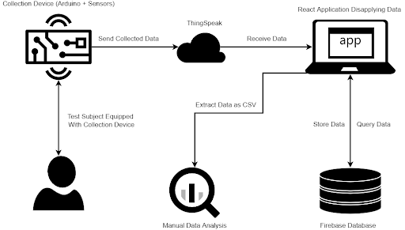
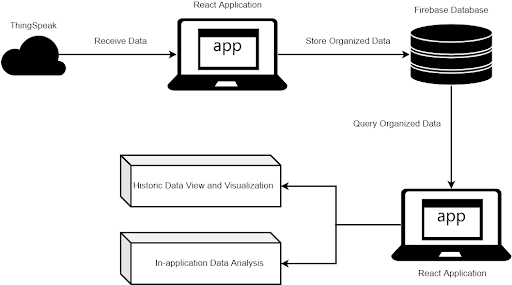

2022 | Capstone
4th Year Undergraduate Capstone Project
Our capstone compared roller hockey to ice hockey to see how similarly different muscles are activated across the two sports.


We used pressure sensors, EMG sensors, ThingSpeak, React, and Firebase to collect and organize data in real time while participants moved through the same drills on ice and on roller blades.
My work centered on the software used to visualize, record, sort, and store that data so the team could analyze results as testing happened.